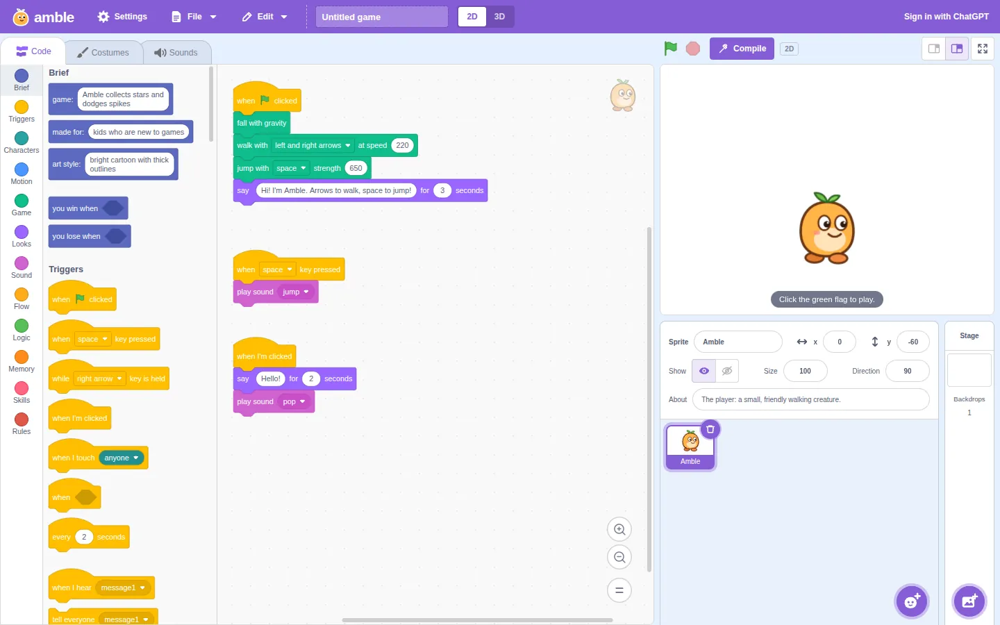
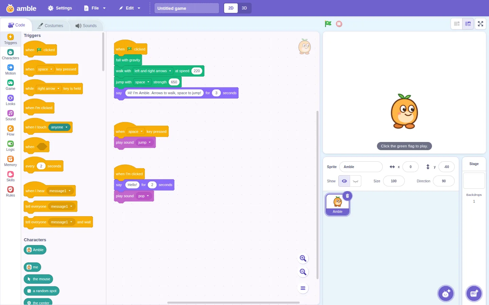
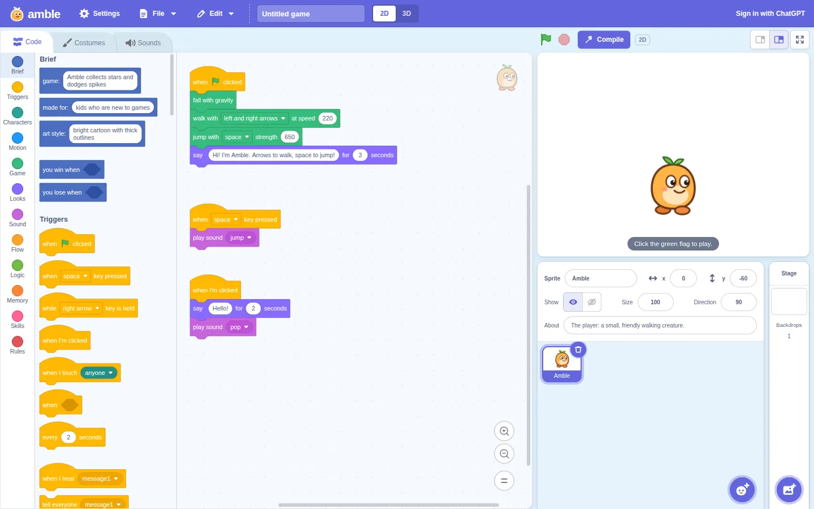
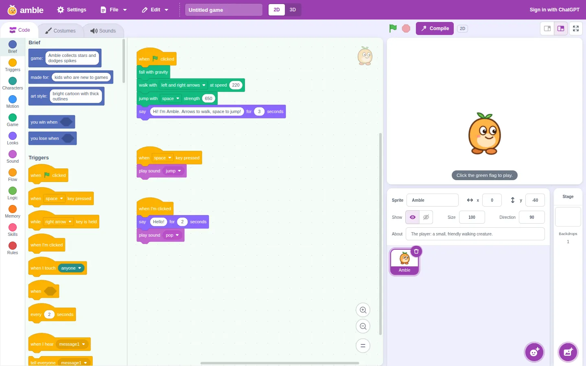
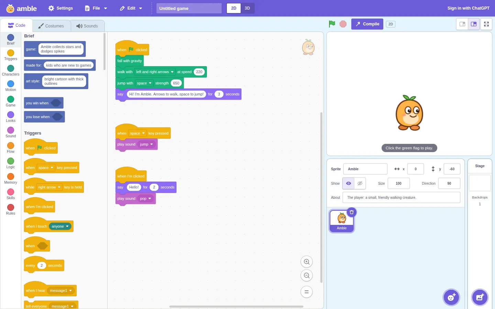

The Scratch-style editor with a subtle spin. Each theme is a full, working copy of Amble: open one and build a game in it. Your projects are shared between them, so you can open the same game in each and compare.
-

Scratch classic
The untouched Scratch look
Scratch's own colours and shapes, as Amble looked before Iris Haze, for comparison.
-
Iris Haze
Seed 4138523179
The main site's look, in a copy from before the green flag built new blocks itself and games moved to Phaser. The purple turns toward iris, greys get a faint lilac tint, and blocks soften slightly. Panels lose their outlines and float on a soft shadow; corners are rounder, with folder-style tabs and soft-square buttons.
-

Paper Iris
Seed 460228954
Iris Haze with Amble's own icons cut from paper: flat pieces of card with no outlines, each on a back card a little down and to the right, with the details cut out. The green flag is a waving banner with a star, stop is a round button with two pause bars, and the toolbox's plain circles become coloured squircles, each with its own white glyph. The purple turns a hair, the greys take a little less lilac, and corners get a touch tighter.
-
Felt-Tip Iris
Seed 827687546
Iris Haze with Amble's own icons, drawn like a fat felt-tip pen: bold round strokes, each icon with one dab of apricot. The green flag is a "go" chevron on a stubby pole, stop is a soft octagon, and the category markers are rings around their own glyphs. The purple turns a little further, greys take a touch more lilac, and corners get a little rounder.
-

Indigo Sky
Seed 3317003459
The purple moves to a bluer indigo, the backgrounds go sky blue and greys take a slate tint. Tabs round like folder tabs, buttons are soft squares, panels float on a soft shadow, and block corners are crisper.
-

Orchid Mint
Seed 2552057946
The purple deepens to orchid, the light blues turn lavender, the blue turns periwinkle, and greys take a faint mint tint. Cards and panels get softer corners and float on a soft shadow; the sprite fields become square-ish inputs.
-

Indigo Sand
Seed 2856563975
The purple turns toward indigo and the light blues toward sky, greys warm slightly, and blocks are a little calmer. Controls get square-ish corners, while cards and panels get softer ones and a soft shadow.